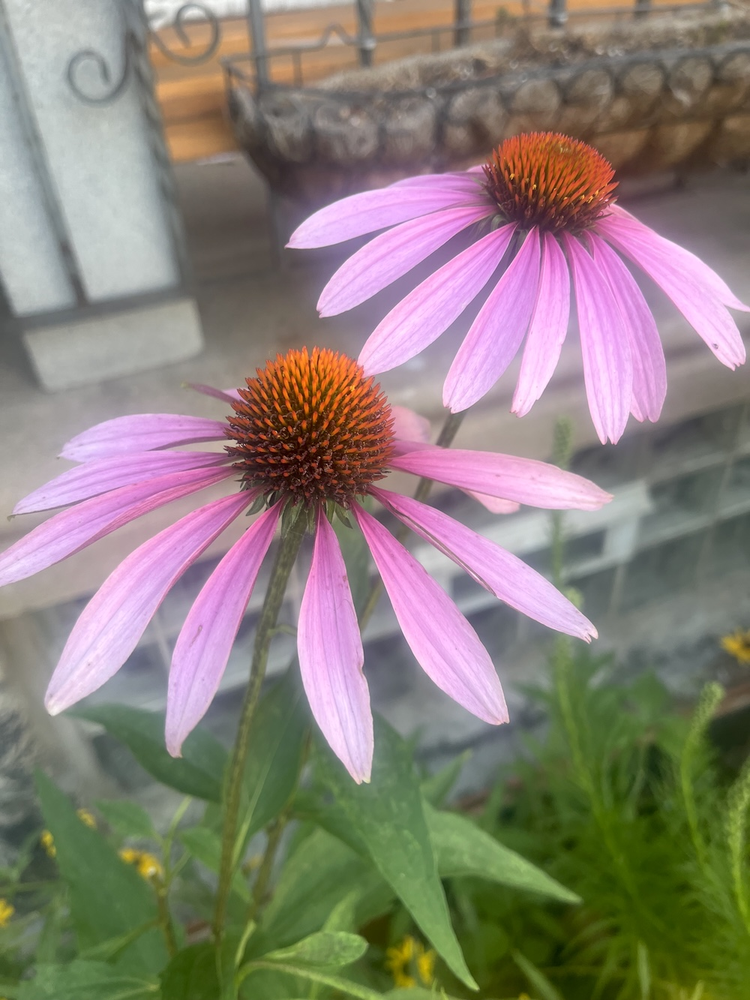

Light suction to mosquito bite. This tubular tool's neato, right? White plastic itch torpedo's might will help you get to sleep tonight.

Can something be dedicated not dedicated? Is the declaration not designation? Is the determination not a demonstration? Does undedication deem it deprecated? Is its detraction not debilitation? Does diminution not display disinclination? Is disclosure on its face disseminated? Is its denunciation not defamation? Are we discouraged by its desecration? If it's not dedicated, what is it?

Pink petaled prickly purpurea, perimeter prostrated pendulously. Spiny center starkly solid, stickers stiffly stab at me. Pretty puffball pretends plushness, possesses piercing pointed pikes. Seemingly supple, shards surprising, startling stilettos, secret spikes.
Atomized aromatics animatedly arise all a-twitter, alchemical amber alike to autumn. Billowing bubbles blossom in brassy bitter, buzzing, bursting, boiling from bottom. Carbonation climbs and coalesces to creamy chitter, a clinging, crackling, crown of cotton. Glass of nostalgia, sensorial memory transmitter, forever in mind and heart, never forgotten.

After the park one weekend, lazy dog walk, light beers, Chinese food. Guitar in hand, you serenade me to keep away shared solitude.
Page 1 of 7 Next »